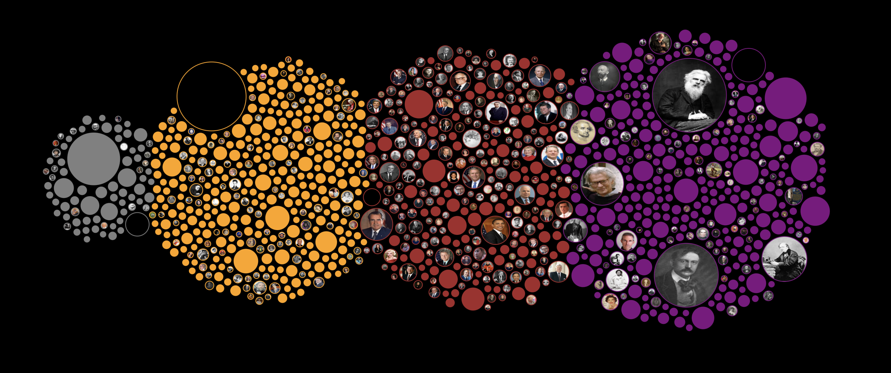

"Data can be beautiful, and in the hands of an artist, it becomes a masterpiece." - Aaron Koblin
For years we have collected data, both knowingly and unknowingly. We gather information and use it for different purposes. We see this happen everyday, Information gets processed differently and we receive it in a multitude of ways. From the news anchor updating us on world events, to the meter number at the gas station. Money, sports, entertainment, politics, all of it is repackaged data shown to us in a way we can understand. But what if I told you there was another way to see this data?
In this article, the topic of data art will be discussed and analysed. It will explore the working definition of data art along with some historical context. Furthermore, this article will reflect on the data art I have chosen to display, along with the communication of strategies I intend to implement. I will expand on my reasoning behind it all, which will be followed by a swift conclusion.
WHAT IS DATA ART
According to Viégas and Wattenberg, data art is a tool used to visualise data (Viegas. Wattenberg, 2018). This visualised data is then used to support reasoning behind this data set. According to Dr. Kirell Benzi, data-driven art is a data set that has been turned into an emotional art piece (Benzi, 2017). This art piece aims to tell a story, whether its about the data or not, and aims to create an emotional response to those who view it.
According to an article called “the digital age of data art” by Maxence Grugier, the origin of data art, or informatism, began with Kynaston McShine who is well known minimalist artist. McShine is credited as being the one who further defined data visualisation into a category of visual representation that could further elaborate on the given data (Benzi, 2017).
Here the article goes on to explain and link scientists to artists, stating that data art is essentially a combination between art and science that requires an individual who delves in scientific research and is also artistic enough to convey those findings as a story. This form of art is one that is non-conventional and goes beyond what is thought to be the norm.
DATA VISUALISATION VS DATA ART
From what I have gathered between both Benzi and Viegas, data-driven art seems like somewhat of a sub-section of data visualisation (Benzi, 2017) (Viegas. Wattenberg, 2018). Data Visualisation is reintroducing data in the form of informative graphs that give clear indication of the data and its components. From data visual graphs you can get specific times and dates of when the data was logged and captured. Data visualisation, in my opinion, is an umbrella term for the different types of visuals that fall under repackaged data. Under this term is where you will find data graphs and data art.
The difference between data graphs and data art is that data art uses the dataset not to convey times and locations, but rather as points to build an image and create a narrative. Although data graphs do incorporate colours and other visual aspects, they are not stand alone images. They may share information but they dont necessarily tell a story.
MY VISION

What I want to achieve is essentially an image that correlates to the data I am currently using for my website. I want to use the data set to create an image of an asteroid or a comet as seen in the image below. The way I intend to implement this is through the use of the given data, along with the use of D3.js for the visual aspects.
.jpg)
I am in the works of implementing it into my website. Initially I wanted to make it a sort of line illustration where lines are connected to dots to overall showcase a picture of an asteroid or a comet. I have played around with the idea of using bubble graph to illustrate this instead. The bubble graph would start off by showing the highest number of near earth objects to the lowest. In order to create the image, I am thinking of making the day of the highest number of NEOs into a large grey circle with the other days tailing behind as small blue, grey, and white circles that represent a tail of a comet.
I chose grey for the large circle because from most images seen, asteroids are grey or have earth related hues to them. His is done to catch the readers eye and to convey the main object to be viewed. The smaller circles will be shades of blues and greys and white so show the tail of the comet, thus making it seem as though it is still shooting across the sky. I also intend to make the background of the image black to further enhance the image or the story being told by the image. I think the bubble graph iteration would essentially enhance the meaning of the data set. It would make sense for a data art picture to be related to the given data so as to instil a sense of foreboding within the viewer that objects that likely seem so far away are actually closer than once thought.
The reaction I want the viewers to feel is a sense of contemplation. I want those who will see this body of work to think about near earth objects and how they could impact the planet.
CONCLUSION
To conclude this article, I would like to state that data driven art is more than a science, but rather an artform that enhances the meaning behind the data provided. The art, as defined by scholars like Viégas and Wattenberg, is a powerful tool for visualizing data with the aim of enhancing our understanding of complex datasets. Dr. Kirell Benzi adds a point to data-driven art by stating that it is transforming raw data into captivating art pieces that tell stories and evoke emotions. Overall, my data art will further enhance the understanding of NEOs and will bridge the gap between science and art.
BIBLIOGRAPHY
- Benzi, K. (2017). Revealing the beauty of hidden data.
- Grugier, M. (2016). The digital age of data art. Retrieved May 9, 2016, from [https://techcrunch.com/2016/05/08/the-digital-age- of-data-art/]
- Viégas, F. B., & Wattenberg, M. (2018). Artistic Data Visualization: Beyond Visual Analytics.